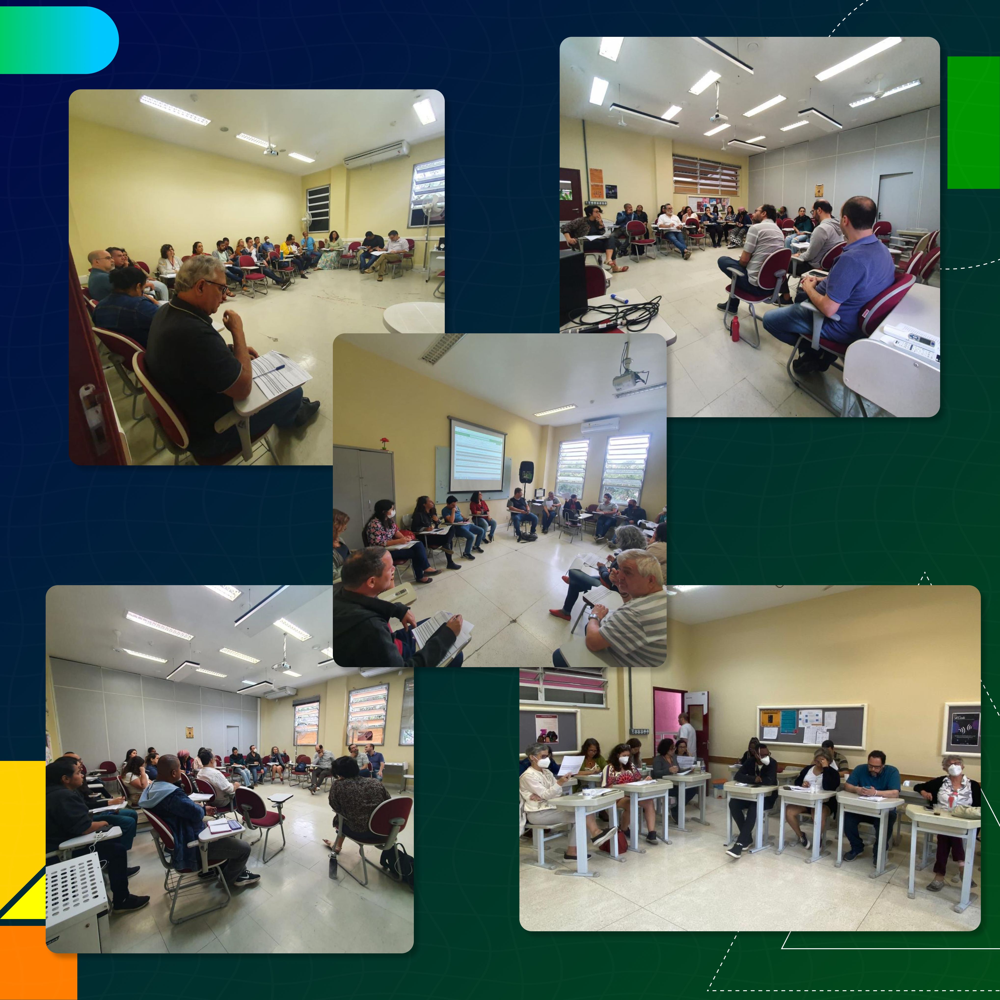
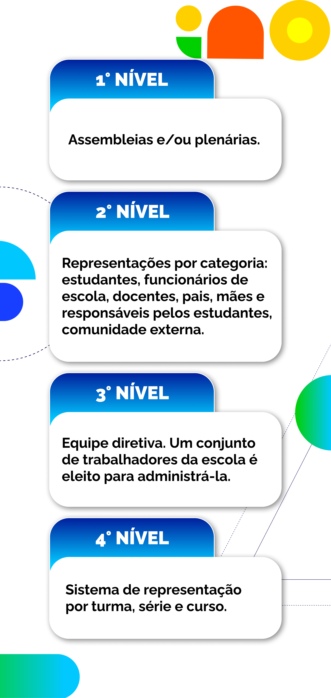

Participação popular com auto-organização coletiva
Há uma tradição de debates importantes no campo educacional brasileiro sobre a . A questão figura na Constituição Federal (CF) e na LDBEN como princípio do ensino formal do país. Mas quais as relações entre esse princípio e os fundamentos da EPT integral e integrada? A educação politécnica possui alguma especificidade quando se trata de participação democrática na organização escolar?
Para responder essas questões, devemos resgatar o princípio básico da perspectiva politécnica: o caráter de classe da educação.
Esse conceito, o caráter de classe da educação, se fundamenta na compreensão da não neutralidade da educação e do seu papel na reprodução da estrutura de classes, levando ao reforço das desigualdades sociais. Isso ocorre mediante o acesso diferenciado das pessoas aos bens culturais e educacionais, a valorização de conteúdos ligados às concepções das classes dominantes, as diferentes trajetórias escolares condutoras a funções a serem exercidas na sociedade, a reprodução de estigmas e preconceitos de classe, a lógica meritocrática, dentre outros mecanismos.
Como discutimos nos capítulos anteriores, a construção da formação integral pressupõe o apontamento para outra realidade social, na qual o trabalho manual e o trabalho intelectual se articulam no projeto de preparação para as profissões. Isso só é possível com um desenho administrativo em que o próprio trabalhador esteja no centro do processo, apresentando suas demandas e discutindo coletivamente relações entre o conhecimento e a realidade. O eixo central da ideia de gestão integral da EPT é, nessa chave, a participação popular com auto-organização coletiva.

Título: Planejamento Estratégico
Fonte: Fiocruz; EPSJV (2022).
Elaboração: Prosa (2025b).
Moisey Pistrak (2018 [1925]) é quem melhor trabalhou a questão, a partir de experiências concretas. Ele inicia mostrando que a escola tradicional se baseia em uma forma de democracia restrita de tipo liberal clássico, limitada à representação eleitoral. Nesse contexto, o estudante deve respeitar a lei sem questioná-la e
de tempos em tempos, em datas determinadas, deve ir a uma seção eleitoral e dar seu voto a este ou aquele candidato em um ou outro órgão municipal ou estadual, e isto é tudo
A escola politécnica, ao contrário, envolve a participação dos trabalhadores na construção das políticas estatais e nos rumos do desenvolvimento nacional. Por isso, a própria definição dos currículos e do projeto pedagógico deve contar com a auto-organização dos estudantes, que não é restrita ao ambiente físico da escola, mas se vincula à territorialidade na qual ela está imersa. As experiências auto-organizadas consolidam a capacidade de o estudante situar-se criticamente no mundo, atingindo níveis gradativamente mais elevados de autonomia política e intelectual. A escola, em si, é assumida como instrumento de democracia participativa e de aprendizado das práticas de participação social.
Quando Pistrak (2018 [1925]) menciona “os trabalhadores”, ele não trata o sujeito de maneira abstrata ou apenas individual. A relação da escola com a sociedade e com a comunidade em seu entorno se desenvolve, também, a partir das coletividades. Assim, o movimento social, a associação de moradores, o sindicato, o coletivo de jovens organizado a partir de manifestações culturais, a associação de pais e mestres etc., são todos atores dinâmicos do processo.
Os órgãos, espaços e fluxos da auto-organização coletiva podem assumir as mais variadas formas. Novamente, não há um manual válido para todas as situações e, ao definir os mais adequados, deve-se sempre voltar o olhar para a própria realidade. Contudo, seria interessante pensar alguns níveis de tomada de decisão que sempre estiveram presentes em experiências de democracia participativa em educação politécnica.

Título: Níveis de tomada de decisão
Fonte: Prosa (2025c).
1° nível: assembleias e/ou plenárias. Esse é o nível no qual deságua todo o processo de participação popular. É a instância máxima de decisão da escola e pode ser pensado a partir de reuniões ordinárias (semestrais ou anuais) e extraordinárias. Prestação de contas, decisões sobre grandes mudanças no projeto pedagógico e na infraestrutura, orçamento participativo, mudanças de estatuto ou regimento etc., são os principais temas tratados nas assembleias e/ou plenárias, as quais contam com a participação de toda a comunidade.
2° nível: representações por categoria, como estudantes, funcionários de escola, docentes, pais, mães e responsáveis pelos estudantes e comunidade externa. Cada uma dessas categorias possui órgãos representativos que devem ser reconhecidos pelos instrumentos democráticos da escola, com formas de apresentação de suas demandas. Congressos escolares, também com periodicidade definida, podem ser previstos, com indicação de delegados de cada categoria. Nesse nível, também podem ser pensados conselhos escolares, os órgãos mistos, compostos por representantes de todas as categorias.
3° nível: equipe diretiva. Um conjunto de trabalhadores da escola é eleito para administrá-la, assumindo funções específicas: direção geral, coordenação pedagógica, orientação pedagógica, atividades de secretaria, comunicação, articulação com a comunidade etc. As atribuições gerais são executivas e subordinam-se às decisões dos níveis anteriores, buscando minimizar o distanciamento entre direção e o restante da comunidade.
4° nível: sistema de representação por turma, série e curso. Em cada um desses espaços e tempos escolares, elegem-se representantes entre os pares, de modo que se criem canais de comunicação entre os níveis anteriores e cada subconjunto de estudantes. Os representantes são porta-vozes das demandas desses subconjuntos.
É muito importante perceber que, nesse esquema, não há esferas exclusivamente administrativas, dissociadas dos aspectos pedagógicos. Em todos os níveis, a finalidade está em acompanhar os processos de ensino-aprendizagem, a relação da escola com a comunidade e a produção de novos conhecimentos. No caso da EPT integral e integrada, essa característica é ainda mais marcante na medida em que o processo pedagógico envolve a relação com conselhos profissionais, órgãos de classe, instrumentos normativos etc. Nesse caso, o objeto da educação envolve o desenvolvimento de habilidades práticas específicas, o que exige uma visão aprofundada da economia, do mercado de trabalho e das demandas locais. O devido ajuste entre a administração e os aspectos pedagógicos, então, só são efetivos na medida em que articulam todos os envolvidos.